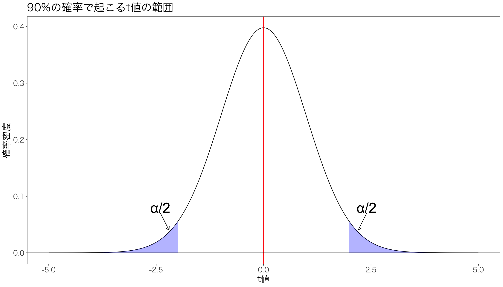

# 自由度を設定
n = 100
df <- n-1
# データを生成
data <- data.frame(x = seq(-5, 5, by = 0.01))
data$y <- dt(data$x, df) # 変数yを作成
# 90%の領域の上限と下限をqt()で計算
ql <- qt(0.025, df)
qu <- qt(0.975, df)
# t分布を書く
g <- ggplot(data) + aes(x = x, y = y) + geom_line()
g <- g + geom_area(data = data %>% filter(x <= ql), fill = "blue", alpha = 0.3) + geom_area(data = data %>% filter(x >= qu), fill = "blue", alpha = 0.3)
g <- g + geom_vline(xintercept = 0, color = "red")
g <- g + xlab("t値") + ylab("確率密度") + labs(title = "90%の確率で起こるt値の範囲")
g <- g + geom_hline(yintercept = 0)
g <- g + annotate(geom = "text", x = 2.4, y = 0.08, label = "α/2", size = 10)
g <- g + annotate(# 始点や終点などを指定して矢印を追加
geom = "segment", x = 2.4, xend = 2.2,
y = 0.07, yend = 0.04, color = "black", size = 0.5,
arrow = arrow(length = unit(0.3, "cm"))
)
g <- g + annotate(geom = "text", x = -2.4, y = 0.08, label = "α/2", size = 10) +
annotate(# 始点や終点などを指定して矢印を追加
geom = "segment", x = -2.4, xend = -2.2,
y = 0.07, yend = 0.04, color = "black", size = 0.5,
arrow = arrow(length = unit(0.3, "cm"))
) + mystyle
print(g)